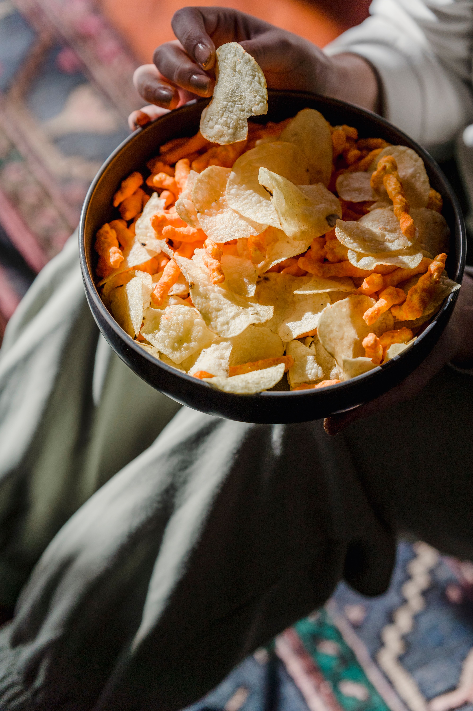

Chips

Description
Chips (commonly known as French fries) are crisp, golden-fried potato batons that are fluffy on the inside.
Ingredients
- Potatoes: 4 large Russet or Maris Piper potatoes.
- Oil: 1 quart (1 liter) high-smoke point oil (vegetable, canola, or peanut oil).
- Salt: To taste.
Stpes
- Cut: Peel the potatoes and slice them into sticks about 1/2-inch thick.
- Soak: Soak the cut potatoes in cold water for 30 minutes to remove excess starch.
- Dry: Drain the potatoes and pat them completely dry with a clean towel.
- First fry (par-fry): Heat oil to 300°F (150°C). Fry the potatoes for 5 minutes until soft but not browned. Remove and drain.
- Second fry (crisp): Turn the heat up to 400°F (200°C). Fry the potatoes a second time for 2 to 3 minutes until deep golden brown and crispy.
- Season: Toss immediately with salt while hot and serve.
Home Page